Bookmark
Jan 14, 2019參考 app: google 圖書, 掌閱, readmoo, 多看, iBook-desktop, iBook-iPad, kindle, udn
新增與移除書籤
手勢
比較常見的有兩種：
1. 點擊右上角
google 圖書, readmoo, ibook, kindle, udn
google 圖書
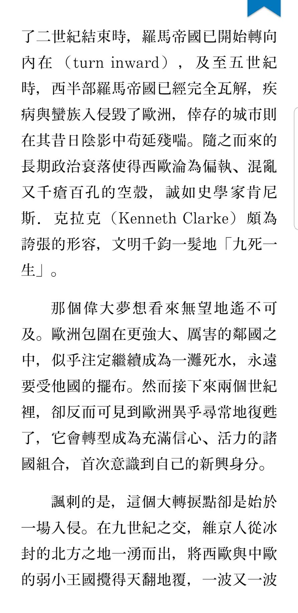
udn
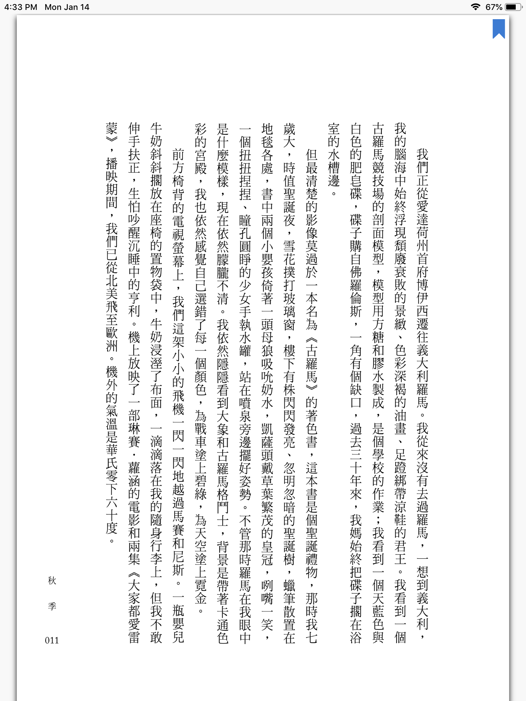
2. 由上往下滑的手勢
（類似 twitter 下拉刷新） 掌閱, 多看
掌閱
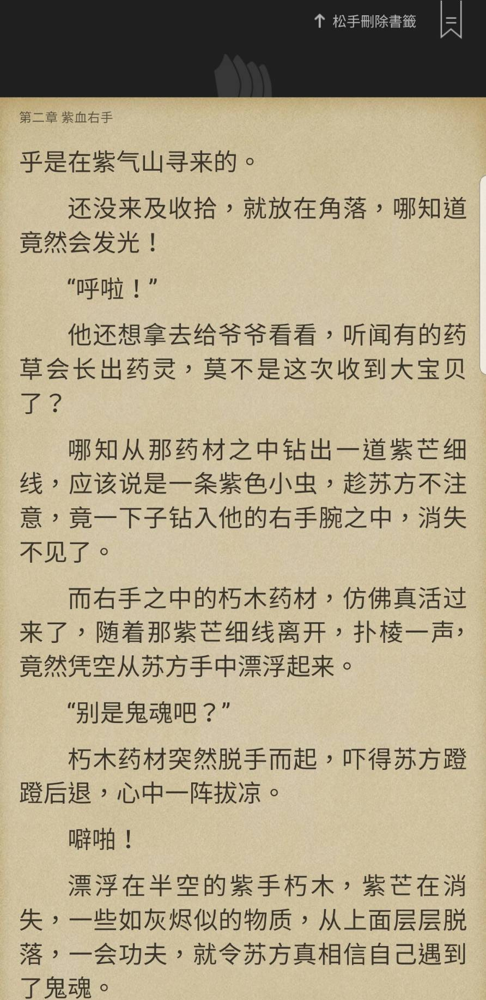
多看
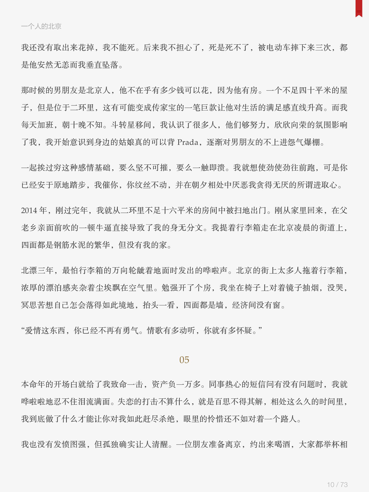
toolbar 上的書籤按鈕
普遍都有此按鈕，但位置與形式略有不同：
1. 和右上角書籤位置疊合
readmoo(iPad), iBook, udn
- readmoo
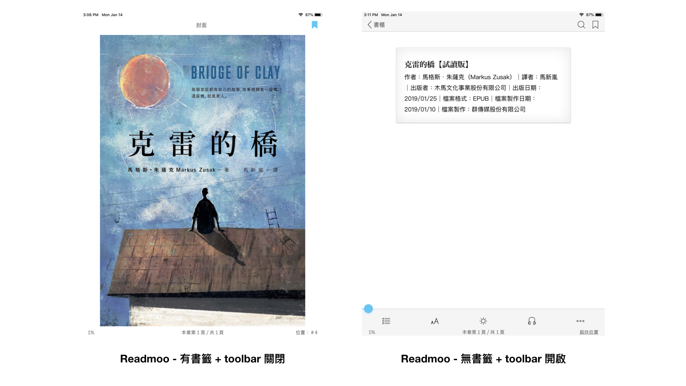
2. 在 toolbar上，但位置沒有疊合
kindle（受限於toolbar顯示方式）
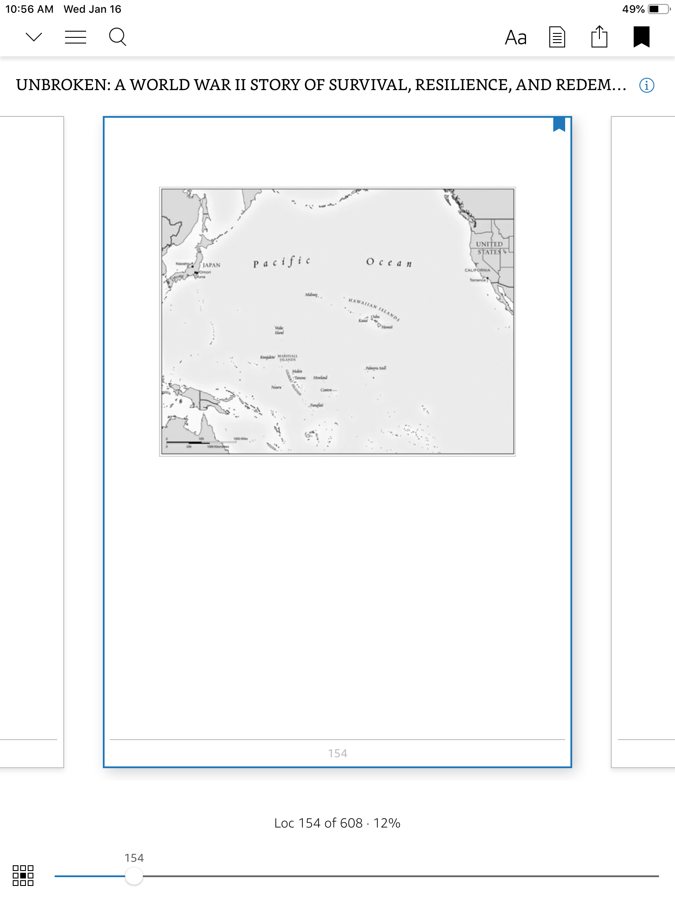
3. 藏在 more 裡面
google 圖書, 掌閱, 多看
- 掌閱
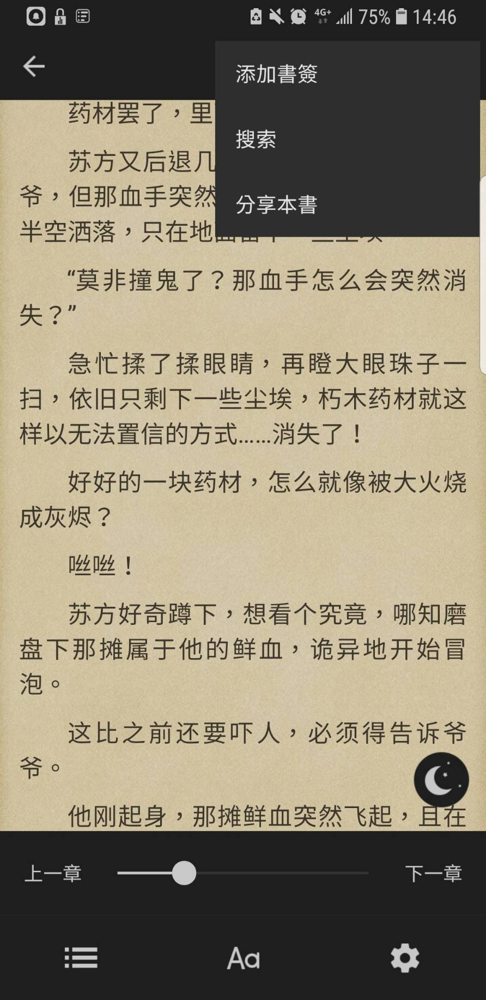
rwd
手機、平板、線上版的差異
書籤列表
普遍都跟 toc 整合在一起。
唯一特例是 iBook-desktop ，在書籤旁有個下拉選單按鈕。
- 多看
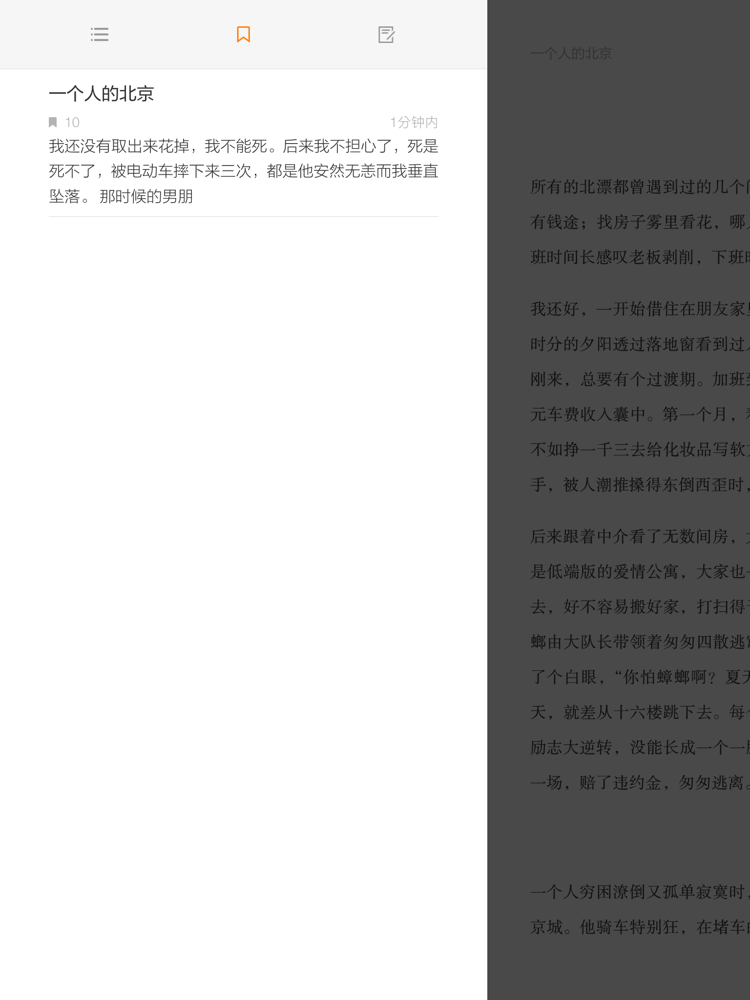

- iBook desktop：toc, note, bookmark 列表都各自有個按鈕
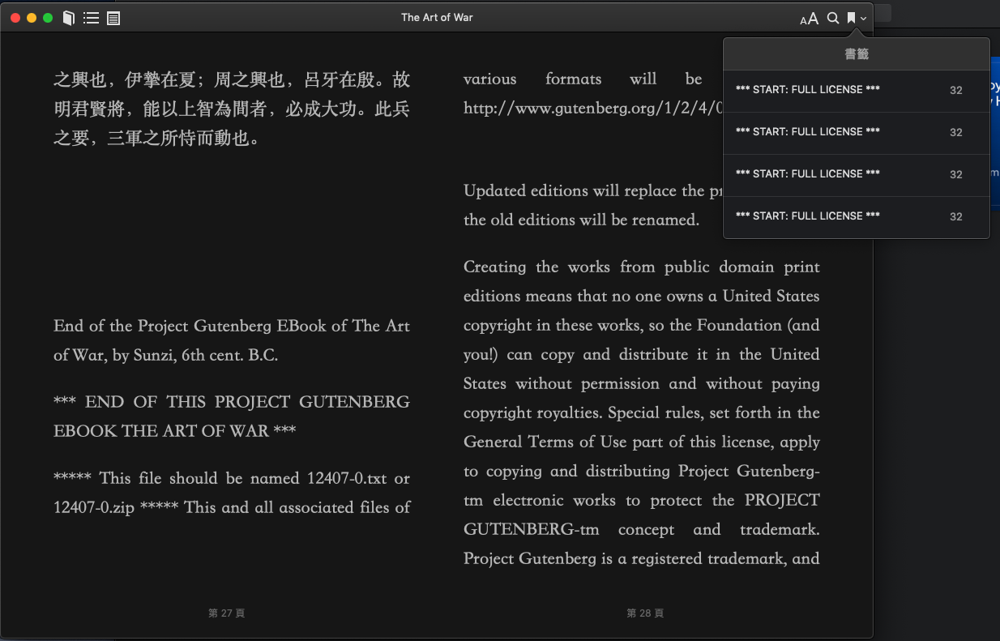
其他比較特別的功能
- readmoo 提供 bookmark 選色，但必須從書籤列表中選擇 （不太方便，好像不是很樂意讓大家換色XD?)
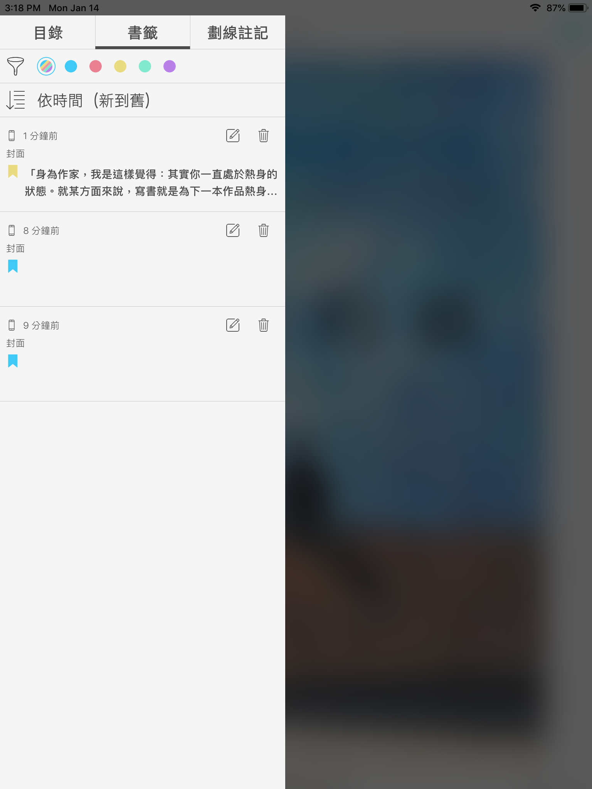
- google 圖書 slider 中有標示出書籤
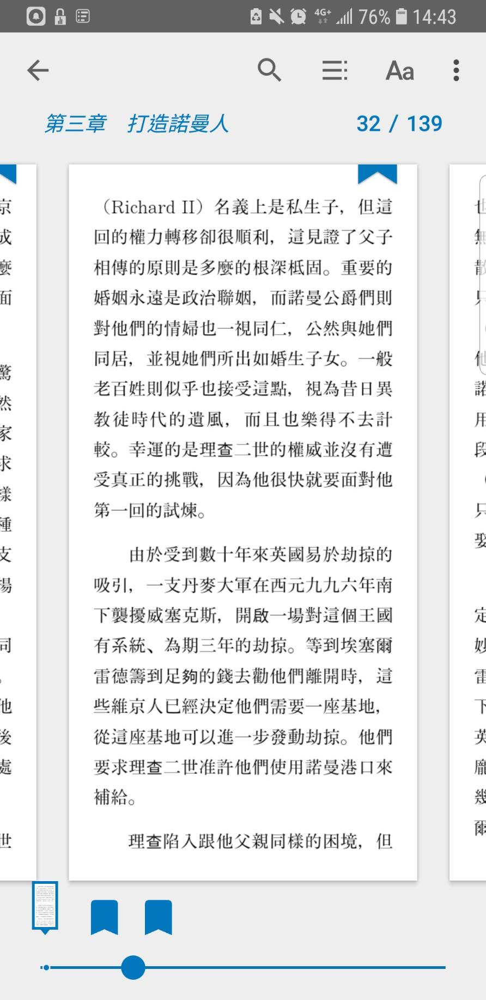